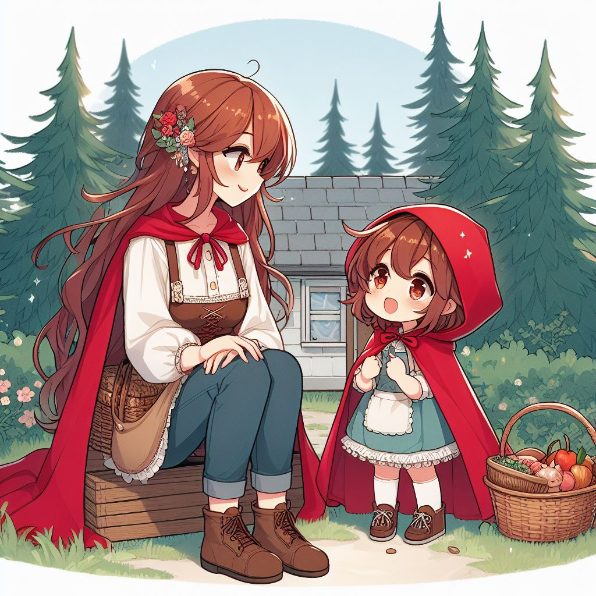
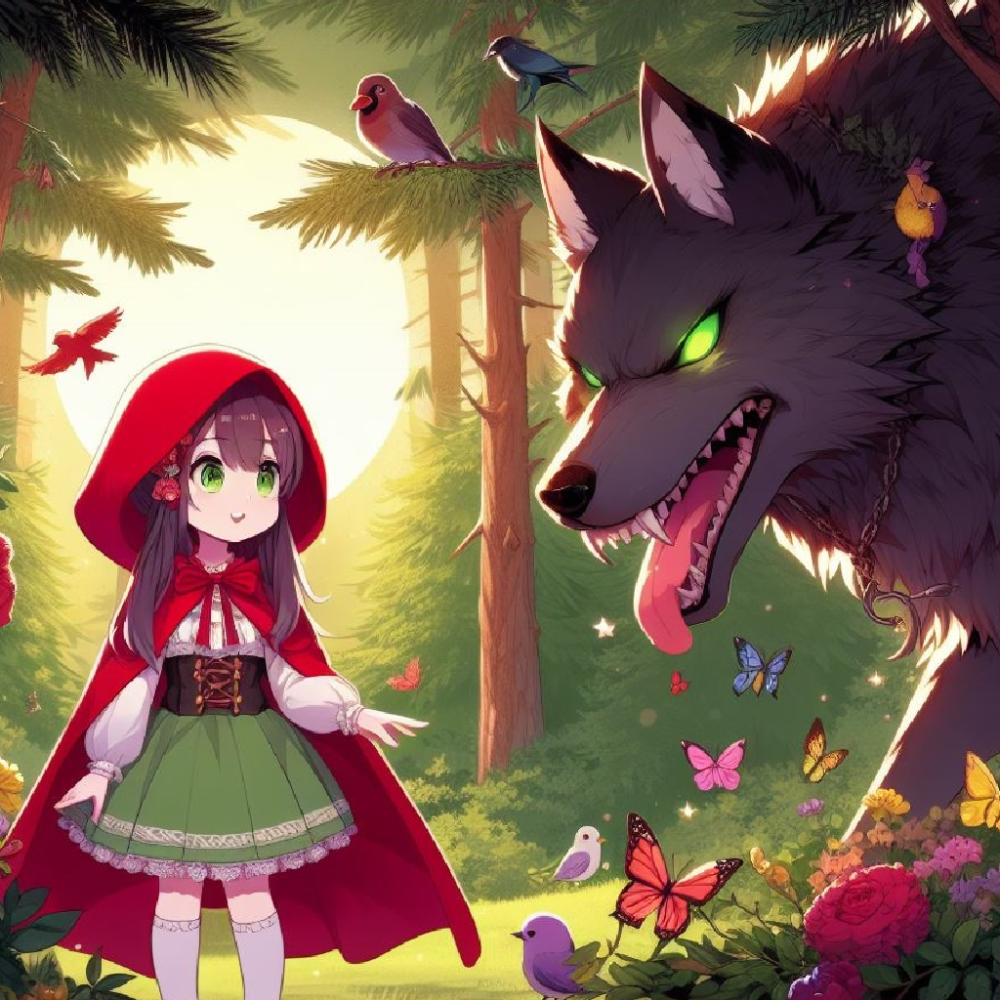
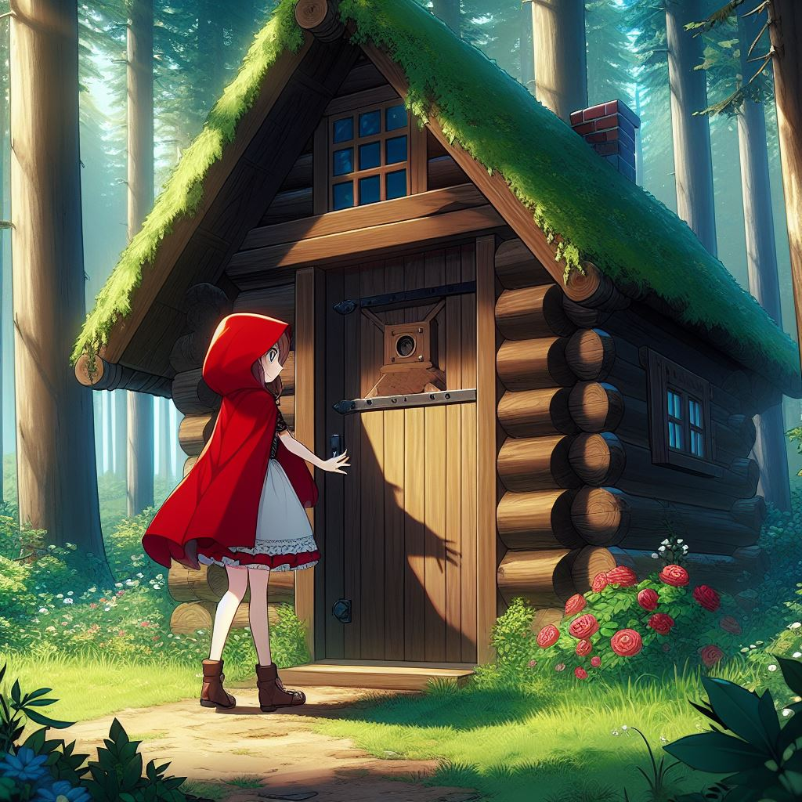
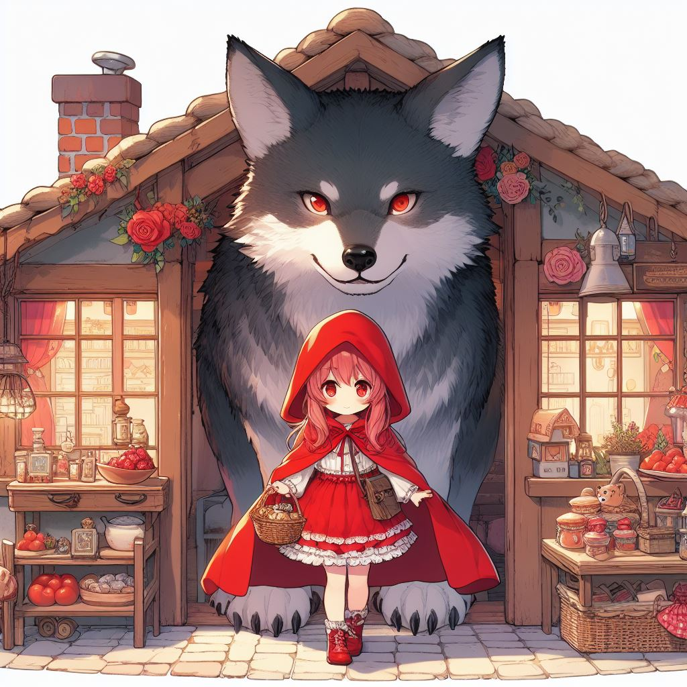
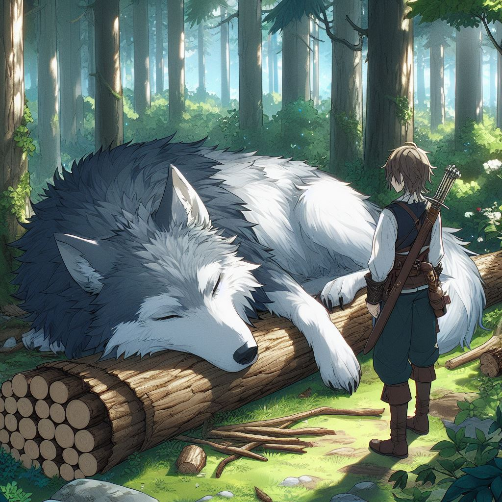
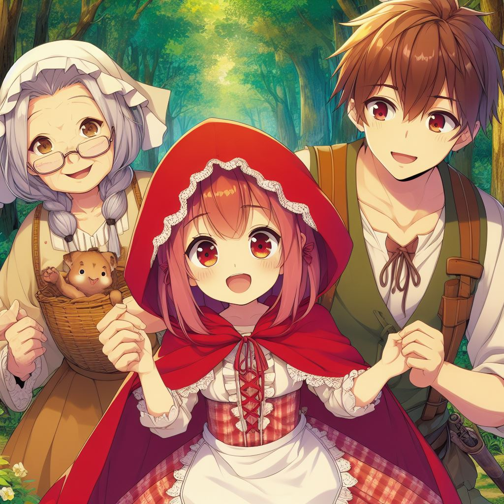

Caperucita Roja

Érase una vez una preciosa niña que siempre llevaba una capa roja con capucha para protegerse del frío.
Por eso, todo el mundo la llamaba Caperucita Roja.
Caperucita vivía en una casita cerca del bosque. Un día, la mamá de Caperucita le dijo:
– Hija mía, tu abuelita está enferma. He preparado una cestita con tortas y un tarrito de miel para que
se la lleves. ¡Ya verás qué contenta se pone!
– ¡Estupendo, mamá! Yo también tengo muchas ganas de ir a visitarla – dijo Caperucita saltando de
alegría.
Cuando Caperucita se disponía a salir de casa, su mamá, con gesto un poco serio, le hizo una
advertencia:
– Ten mucho cuidado, cariño. No te entretengas con nada y no hables con extraños. Sabes que en el bosque
vive el lobo y es muy peligroso. Si ves que aparece, sigue tu camino sin detenerte.
– No te preocupes, mamita – dijo la niña -. Tendré en cuenta todo lo que me dices.
– Está bien – contestó la mamá, confiada –. Dame un besito y no tardes en regresar.
– Así lo haré, mamá – afirmó de nuevo Caperucita diciendo adiós con su manita mientras se alejaba.

Cuando llegó al bosque, la pequeña comenzó a distraerse contemplando los pajaritos y recogiendo flores.
No se dio cuenta de que alguien la observaba detrás de un viejo y frondoso árbol. De repente, oyó una
voz dulce y zalamera.
– ¿A dónde vas, Caperucita?
La niña, dando un respingo, se giró y vio que quien le hablaba era un enorme lobo.
– Voy a casa de mi abuelita, al otro lado del bosque. Está enferma y le llevo una deliciosa merienda y
unas flores para alegrarle el día.
– ¡Oh, eso es estupendo! – dijo el astuto lobo -. Yo también vivo por allí. Te echo una carrera a ver
quién llega antes. Cada uno iremos por un camino diferente. ¿Te parece bien?

La inocente niña pensó que era una idea divertida y asintió con la cabeza. No sabía que el lobo había
elegido el camino más corto para llegar primero a su destino. Cuando el animal llegó a casa de la
abuela, llamó a la puerta.
– ¿Quién es? – gritó la mujer.
– Soy yo, abuelita, tu querida nieta Caperucita. Ábreme la puerta – dijo el lobo imitando la voz de la
niña.
– Pasa, querida mía. La puerta está abierta – contestó la abuela.
El malvado lobo entró en la casa y sin pensárselo dos veces, saltó sobre la cama y se comió a la
anciana. Después, se puso su camisón y su gorrito de dormir y se metió entre las sábanas esperando a que
llegara la niña. Al rato, se oyeron unos golpes.
– ¿Quién llama? – dijo el lobo forzando la voz como si fuera la abuelita.
– Soy yo, Caperucita. Vengo a hacerte una visita y a traerte unos ricos dulces para merendar.
– Pasa, querida, estoy deseando abrazarte – dijo el lobo malvado relamiéndose.

La habitación estaba en penumbra. Cuando se acercó a la cama, a Caperucita le pareció que su abuela
estaba muy cambiada. Extrañada, le dijo:
– Abuelita, abuelita ¡qué ojos tan grandes tienes!
– Son para verte mejor, preciosa mía – contestó el lobo, suavizando la voz.
– Abuelita, abuelita ¡qué orejas tan grandes tienes!
– Son para oírte mejor, querida.
– Pero… abuelita, abuelita ¡qué boca tan grande tienes!
– ¡Es para comerte mejor! – gritó el lobo dando un enorme salto y comiéndose a la niña de un bocado.

Con la barriga llena después de tanta comida, al lobo le entró sueño. Salió de la casa, se tumbó en el
jardín y cayó profundamente dormido. El fuerte sonido de sus ronquidos llamó la atención de un cazador
que pasaba por allí. El hombre se acercó y vio que el animal tenía la panza muy hinchada, demasiado para
ser un lobo. Sospechando que pasaba algo extraño, cogió un cuchillo y le rajó la tripa. ¡Se llevó una
gran sorpresa cuando vio que de ella salieron sanas y salvas la abuela y la niña!
Después de liberarlas, el cazador cosió la barriga del lobo y esperaron un rato a que el animal se
despertara. Cuando por fin abrió los ojos, vio como los tres le rodeaban y escuchó la profunda y
amenazante voz del cazador que le gritaba enfurecido:
– ¡Lárgate, lobo malvado! ¡No te queremos en este bosque! ¡Como vuelva a verte por aquí, no volverás a
contarlo!
El lobo, aterrado, puso pies en polvorosa y salió despavorido.

Caperucita y su abuelita, con lágrimas cayendo sobre sus mejillas, se abrazaron. El susto había pasado y
la niña había aprendido una importante lección: nunca más desobedecería a su mamá ni se fiaría de
extraños.